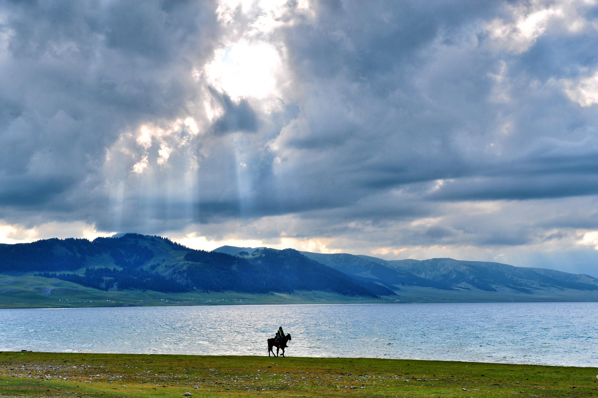
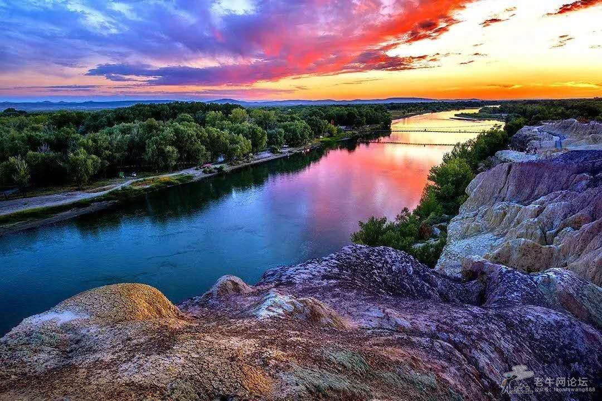
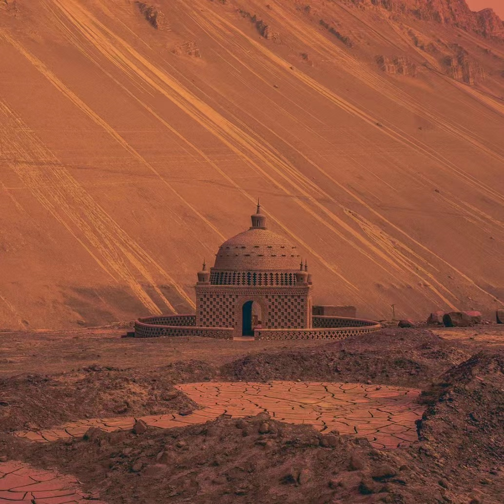
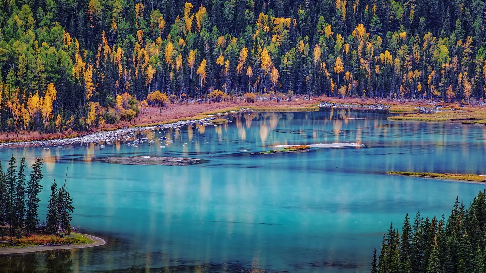

City
Hi! This is Xinjiang.
Sayram Lake
Sayram Lake is located in Bortala Mongol Autonomous Prefecture, Xinjiang. The longest lake is 29.6 kilometers from east to west, and the widest lake is 25.7 kilometers from north to south.
Rainbow Beach
Rainbow Beach is located in Burjin County, Altay Prefecture, northern Xinjiang. It is located on the first and second terraces on the north bank of the Erqi River.
Flaming Mountains
Flame Mountain is located on the 312 National Highway in Gaochang District, Turpan City, Xinjiang Uygur Autonomous Region, the northern edge of the Turpan Basin, and the northern route of the ancient Silk Road, in an east-west direction.
Heavenly Lake

Located about 68 km east of Urumqi, Tianchi, or Tianchi Lake, is a top-rated attraction and one of the landmarks of Xinjiang, a half-moon alpine lake on the north side of Bogda Peak of Tianshan Mountains
Kanas Lake
Kanas Lake is a stunning alpine lake in the Altai Mountains, in the north of Xinjiang, China. The lake and its surrounding area is home to diverse wildlife and vegetation, making it an ideal spot for nature enthusiasts.
Site Map
Alternatively, use the header bar to navigate around.